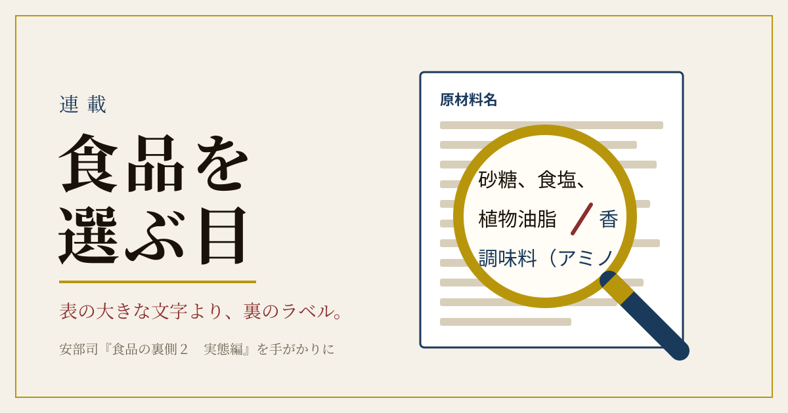
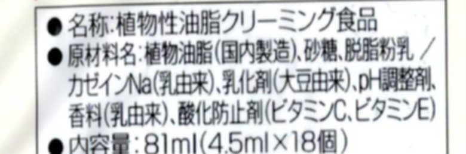
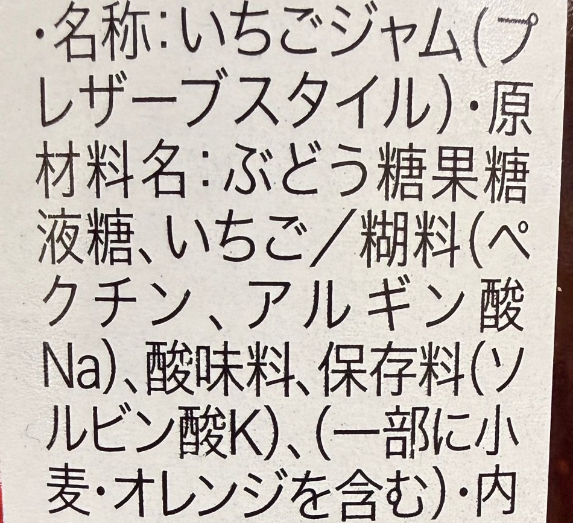
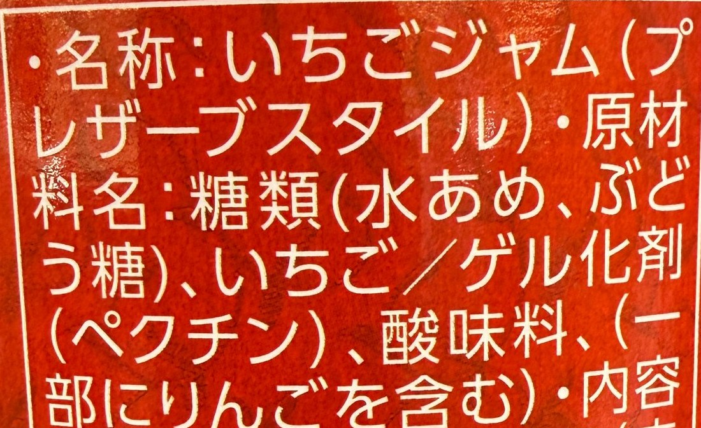

安くて、きれいで、日持ちがして、おいしい。そんな食品が、今は当たり前のように棚に並んでいます。でも、家で同じものをつくろうとすると、手間も材料費もかかります。では、あの安さはどこから来るのでしょうか。
第2回は、安部司さんの『食品の裏側２ 実態編』の第1章・第2章を手がかりに、値段の裏側をのぞいてみます。途中に、「えっ、そうだったの？」という身近な食品のコラムも挟みます。
安部さんは、添加物がこれほど使われる理由を、私たちの願いを叶えるためだと説明します。安い、簡単、便利（日持ちする）、きれい（見た目がよい）、おいしい（味が濃い）。この五つを一度に満たそうとすると、添加物の力を借りることになる、というのです（同書 46ページ）。
とくに「安さ」のために使われる仕掛けとして、安部さんは「置き換え」と「増量」を挙げています。
高い本物の材料を、安い別の材料と添加物で似せてつくるやり方です。たとえば、牛乳の脂肪を安い植物油に置き換える。天然のだしを、うま味の素やエキスで置き換える。安部さんは、だしを取ったあとのかつお節や昆布（だしがら）に、調味料やエキス、着色料で味と色をつけ、おにぎりの具の「おかか」や「昆布」に仕立てる例を挙げています（同書 40ページ）。
置き換えそのものが悪いわけではありません。うまく使えば、食べ物を無駄にせず、安く提供できる工夫でもあります。問題は、買う側が「本物」だと思い込んで買っていることです。
喫茶店やレストランで、コーヒーに添えられてくる小さなカップ。「コーヒーフレッシュ」や「ポーションミルク」と呼ばれるものです。安部さんはこれを「置き換え」の代表選手として紹介しています（同書 47〜48ページ）。
多くの製品は、植物性の油と水を乳化剤で白く混ぜ合わせ、着色料や香料で色と香りを整えてつくられています。乳脂肪を主な材料にした製品もあり、その場合は「乳等を主要原料とする食品」と表示されます。つまり、「ミルク」と呼ばれていても、牛乳とはかぎらないのです。

小さなカップでも、容器には名称や原材料が小さく書かれています。今度コーヒーを飲むとき、「植物油脂」が先頭にあるかどうか、のぞいてみてください。なお、植物油を固める加工でできる「トランス脂肪酸」は、日本の大手メーカーがこの十年ほどで減らす取り組みを進めており、「0.0g」とうたった商品もあります。
もう一つが「増量」です。水やでんぷん、水あめなど安い材料でかさを増やし、足りないとろみや味、色を添加物で補います。
安部さんは、いちごジャムを二つ並べています（同書 55〜56ページ）。昔ながらのつくり方のジャムは、原材料の先頭が「いちご」。もう一方は、先頭が「糖類（水あめ、砂糖、ブドウ糖果糖液糖）」で、いちごはその後。そこにゲル化剤、酸味料、香料などが続きます。第1回でお話ししたとおり、原材料は多い順に並んでいますから、先頭を見るだけで「何が主役か」が分かるのです。


また安部さんは、「カロリー半分」をうたうマヨネーズ風の商品にも触れています（同書 54ページ）。油を減らしたぶんを水で補い、でんぷんや増粘剤でマヨネーズらしい固さを出しているので、名称も「マヨネーズ」ではなく「ドレッシング」の仲間になります。カロリーが半分でも、たくさん使えば同じこと、という安部さんの一言には、うなずかされます。
冷凍庫のアイス、裏の「種類別」を見たことはありますか。法令（乳等省令）で、乳の成分の量によって名前が決まっています。
・アイスクリーム：乳固形分15.0％以上、うち乳脂肪分8.0％以上
・アイスミルク：乳固形分10.0％以上、うち乳脂肪分3.0％以上
・ラクトアイス：乳固形分3.0％以上（乳脂肪分の決まりはなし）
・氷菓：それより少ないもの（アイスキャンディーやかき氷など）
ラクトアイスは乳脂肪の決まりがないため、パーム油などの植物油を使ったものが多く、そのぶんお手頃な値段になっています。安部さんも、多くの人がアイスクリームだと思って食べているものが、実はラクトアイスだと書いています（同書 49〜50ページ）。どれが良い悪いではなく、「名前を知って選ぶ」ための知識です。
第1章で安部さんは、激安ハンバーグ弁当のつくり方も明かしています（同書 26ページ）。弁当工場では、一から料理するのではなく、ハンバーグもソースも付け合わせもご飯も、それぞれの専門の会社から仕入れ、ベルトコンベアで流れる容器に詰めていく。それが一番効率がよく、安くつくれるのだといいます。
その分、一つひとつの材料が、部品として日持ちするようにつくられています。安さは、分業と効率の結果でもあるのです。
スーパーの乳製品の棚。「生クリーム」だと思って手に取ったものが、実は「ホイップ」だった、ということはありませんか。安部さんによると、「種類別：クリーム（乳製品）」と書かれるのは牛乳から分けた乳脂肪だけのもので、植物性の油脂や乳化剤を加えたものは「乳等を主要原料とする食品」となり、「ホイップ」「○○ホイップ」といった名前で売られています（同書 48〜49ページ）。簡単に泡立ち、日持ちもよく、値段も手頃。用途に合わせて選べばよいのです。
こうした「似て非なる食品」は、ほかにもたくさんあります。この連載の番外編で、まとめて取り上げる予定です。
コーヒーフレッシュ、ラクトアイス、ホイップ。ここまでの三つのコラムに共通していたのは、乳脂肪のかわりに「植物性油脂」が使われていることでした。そこで気になるのが、近ごろよく耳にする「植物性の油は、かえって体に良くないらしい」という話です。
結論を先に言えば、これは半分ほんとうで、半分は誤解です。「植物性」と一口に言っても、中身はまったく別物が混ざっているからです。
① 問題になったのは「加工のしかた」 液体の植物油に水素を加えて固める「部分水素添加油脂」をつくる過程で、トランス脂肪酸ができます。これをとりすぎると心臓の病気が増える可能性が高いとされ、アメリカでは2018年6月から使用の規制が始まりました。マーガリンやショートニングが槍玉にあがったのはこのためです。
ただ日本人の平均摂取量は、食品安全委員会の推計でエネルギー比0.3％ほど。WHOが目標とする「1％未満」を下回っており、「脂質に偏った食事をしていなければ影響は小さい」というのが委員会の見解です。日本にはトランス脂肪酸の表示義務がありませんが、メーカーの低減も進み、いまのマーガリンには含有量の少ない製品も多く出ています。
② 「植物性」なのに、性質は乳脂肪に近い油がある クリーム代わりの製品やラクトアイスによく使われるのは、パーム油やヤシ油（ココナッツ油）です。これらは植物由来でも、常温で固まりやすい「飽和脂肪酸」を多く含みます。WHOも、飽和脂肪酸の多い油としてバターやラードと並べてパーム油・ヤシ油を挙げています。「植物性だからヘルシー」とは言えない、ということです。
③ 一方で、すすめられている植物の油もある WHOは2023年の指針で、脂質は総エネルギーの30％以下、そのうち飽和脂肪酸は10％以下、トランス脂肪酸は1％未満とし、飽和脂肪酸をオリーブ油やなたね油、魚の油などの不飽和脂肪酸に置きかえることを勧めています。つまり国際的な指針は、いまも「植物の油＝悪」ではありません。
④ 乳脂肪は「見直し」の途中 逆に、長く「控えめに」と言われてきた乳脂肪は、近年の研究で評価が変わりつつあります。牛乳はおおむね中立、ヨーグルトやチーズなど発酵した乳製品は中立か、むしろ良い方向の関連が多いという報告が増えています。脂肪がたんぱく質やカルシウムと一緒に「食品まるごと」の形で含まれていることが効いているのでは、という見方です。ただし、その多くは観察研究で、決着はついていません。またバターにも、牛の体内で自然にできるトランス脂肪酸がわずかに含まれています。
まとめると、見るべきは「植物性か動物性か」ではなく、どんな種類の油を、どう加工して、どれくらいとっているか。ラベルの「植物油脂」の文字は、その入口にすぎません。
この話は奥が深いので、番外編で少しずつ掘り下げます。予定しているのは——
・トランス脂肪酸のいま：マーガリンは本当に「悪者」のままか
・パーム油のはなし：ラベルに名前が出にくい、身近な油
・「サラダ油は体に悪い？」：海外で広がる種子油論争をどう読むか
・乳製品の見直し：バター・チーズ・ヨーグルトとのつきあい方
※このコラムは公的機関や研究の紹介で、特定の食事をすすめるものではありません。持病のある方や食事制限を受けている方は、かかりつけの医師や管理栄養士にご相談ください。
安いものが悪い、という話ではありません。家計をやりくりするのに、安い食品はありがたい存在です。大切なのは、「なぜ安いのか」を知ったうえで、納得して買うこと。安部さんは第8章で、博多弁の「値段しこ」（値段に見合う価値）という言葉を紹介しています（同書 200ページ）。安いか高いかより、その値段に何が入っているか。それを見るのが、裏のラベルです。
1．いつものジャムやドレッシングの原材料の「先頭」を見る。
2．冷凍庫のアイスの「種類別」を確かめる。
3．外でコーヒーを飲むとき、ミルクのカップの小さな文字を読んでみる。
「ラベルのこの言葉が分からない」「この食品は本当のところどうなの」といった疑問を、掲載している各ブログのコメント欄にお寄せください。どのブログからいただいた質問も、公的機関の資料や研究にあたって詳しく調べ、このコーナーや番外編でお答えします。
※個別の病気や治療についてのご相談にはお答えできません。かかりつけの医師にご相談ください。
次回（11月20日（金）掲載予定）は「塩分・油・砂糖の三兄弟」。知らずに摂りすぎる仕組みを考えます。
記録で確かめられること
・アイス類の4区分（アイスクリーム・アイスミルク・ラクトアイス・氷菓）と乳固形分・乳脂肪分の基準は、乳等省令の成分規格として自治体の資料に示されている（新潟市・苫小牧市）。
・アメリカでは、部分水素添加油脂（トランス脂肪酸の主な発生源）の食品への使用が2018年6月から原則として認められなくなった。
・食品安全委員会は、日本人のトランス脂肪酸の平均摂取量をエネルギー比0.3％程度と推計し、通常の食生活では健康への影響は小さいとしている（評価書の概要）。
・WHOは2023年7月の指針で、飽和脂肪酸をエネルギーの10％以下、トランス脂肪酸を1％未満とし、不飽和脂肪酸への置きかえを勧めている。
記録からは確かめられないこと
・「コーヒーフレッシュの多くは植物性」という点は、安部さんの記述と各社の表示例による。市場に出回る製品の何割が植物性かを示す統計は、確かめられていない。
・弁当工場が部品を仕入れて詰めるだけという説明は、安部さんの業界経験にもとづくもので、すべての弁当に当てはまるかは記録からは分からない。
・乳製品と心臓病などの関係は観察研究が中心で、「良い」とまでは言えない。研究ごとに結論の幅がある。
・メーカーのトランス脂肪酸低減は各社の発表によるもので、店頭の全製品を実測したものではない。
牧正人史先生が昭和三十三年に発見された姓名科学の体系を、デジタルの形で遺す仕事を続けています。
▶ 姓名科学の殿堂へ ▶ お名前を解析する